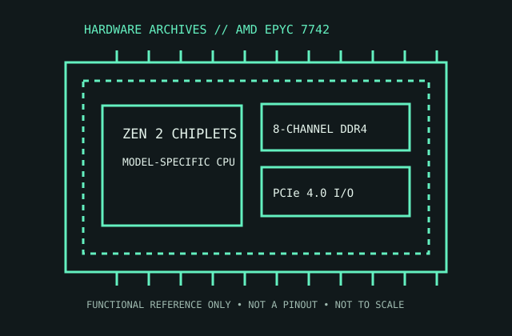

[ SERVER AND WORKSTATION PROCESSORS // IDENTIFIED PROCESSOR ]
AMD EPYC 7742
The EPYC 7742 is a 2nd Generation EPYC Rome server processor with 64 Zen 2 cores, eight-channel DDR4 and a 225 W thermal design.

MODEL IDENTIFICATION: AMD EPYC 7742. Compare the printed part number, speed grade, package, cache configuration, and stepping with the cited documentation; do not transfer one variant’s limits to another.
Recorded specifications
| Cataloged part | AMD EPYC 7742 |
|---|---|
| Era / family | AMD EPYC 7002 Series / Rome, launched 2019; EPYC 7742. |
| Key specifications | 64 cores / 128 threads; 2.25 GHz base, up to 3.4 GHz boost; 256 MB L3; 225 W TDP; SP3; 8-channel DDR4-3200; 128 PCIe 4.0 lanes; 2P-capable platform SKU. |
| Interface / fit | Requires SP3 server board with BIOS/AGESA support for EPYC 7002. Confirm cooler/chassis, 8-channel registered ECC memory population, board generation, and whether the platform is configured for one or two sockets. |
| Variant distinction | EPYC 7742 is the dual-socket-capable SKU; related 7F/7H parts have different clocks/cache/power profiles. Server vendor firmware and thermal limits govern the operating profile. |
Compatibility and variants
- Requires SP3 server board with BIOS/AGESA support for EPYC 7002. Confirm cooler/chassis, 8-channel registered ECC memory population, board generation, and whether the platform is configured for one or two sockets.
- EPYC 7742 is the dual-socket-capable SKU; related 7F/7H parts have different clocks/cache/power profiles. Server vendor firmware and thermal limits govern the operating profile.
- Confirm the system manufacturer’s exact processor support list, firmware minimum, board revision, power/thermal envelope, and memory requirements before installation.
Service and archival notes
Record OPN, SP3 board/BIOS, chassis air duct/cooler, DIMM population by channel, and measured power/thermals. Follow server maker’s CPU handling and torque procedure; inspect socket carrier before closing.
Preserve provenance and a record of the exact marking, condition, tested board/platform, firmware, cooling, memory configuration, and test conditions. Separate published specification limits from observations made on a particular surviving system.
Sources & further reading
- AMD EPYC 7742 official product specificationsSpecific model or manufacturer-family reference; verify revision and configuration against the device marking and platform documentation.
- AMD EPYC 7002 Series Processors Product Brief — Rome platform featuresSpecific model or manufacturer-family reference; verify revision and configuration against the device marking and platform documentation.
- AMD EPYC 7002 launch history and Rome generationSpecific model or manufacturer-family reference; verify revision and configuration against the device marking and platform documentation.
- ServeTheHome — Crushing Cinebench V5 Dual AMD EPYC 7742 CPUs and 256 ThreadsIndependent video review; treat as supplementary context, not primary manufacturer documentation.
Third-party reference pages and document archives are finding aids. The matching manufacturer datasheet, product specification, and board support documentation take precedence for the exact revision and host.